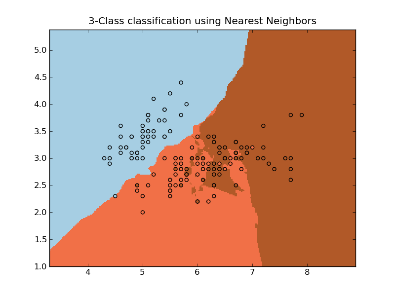

Nearest Neighbors¶
Sample usage of Nearest Neighbors classification. It will plot the decision boundaries for each class.

Python source code: plot_neighbors.py
print __doc__
import numpy as np
import pylab as pl
from scikits.learn import neighbors, datasets
# import some data to play with
iris = datasets.load_iris()
X = iris.data[:, :2] # we only take the first two features. We could
# avoid this ugly slicing by using a two-dim dataset
Y = iris.target
h = .02 # step size in the mesh
# we create an instance of Neighbours Classifier and fit the data.
clf = neighbors.NeighborsClassifier()
clf.fit(X, Y)
# Plot the decision boundary. For that, we will asign a color to each
# point in the mesh [x_min, m_max]x[y_min, y_max].
x_min, x_max = X[:,0].min()-1, X[:,0].max() + 1
y_min, y_max = X[:,1].min()-1, X[:,1].max() + 1
xx, yy = np.meshgrid(np.arange(x_min, x_max, h), np.arange(y_min, y_max, h))
Z = clf.predict(np.c_[xx.ravel(), yy.ravel()])
# Put the result into a color plot
Z = Z.reshape(xx.shape)
pl.set_cmap(pl.cm.Paired)
pl.pcolormesh(xx, yy, Z)
# Plot also the training points
pl.scatter(X[:,0], X[:,1], c=Y)
pl.title('3-Class classification using Nearest Neighbors')
pl.axis('tight')
pl.show()